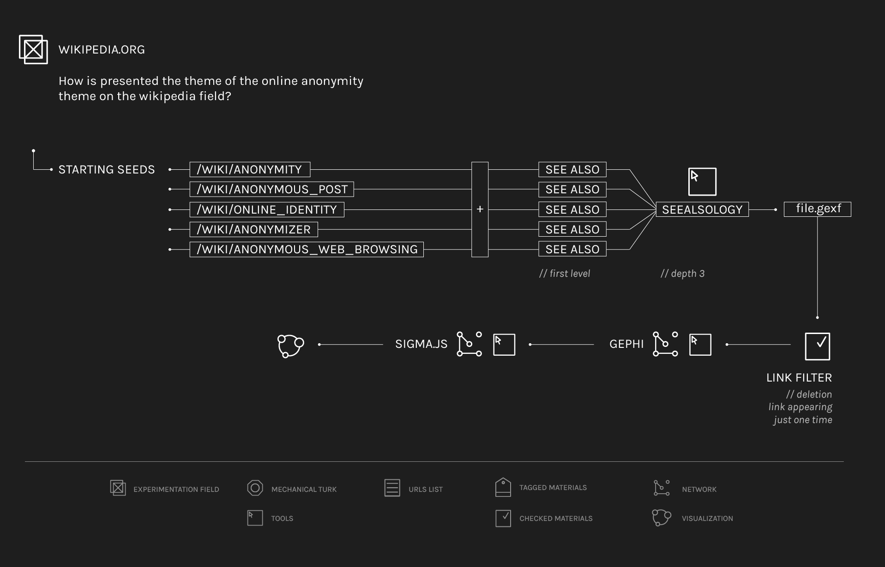

exploring wikipedia through 'Seealsology'
At the beginning five initial Wikipedia articles related to online anonymity have been chosen. These articles were the most suitable for describing our theme and they were: "Anonymity", "Anonymous post", "Online identity", "Anonymizer", "Anonymous web browsing". Thereafter, by using Seealsology tool, the "see also" of first level have been extracted from these five pages and they have been united to the main articles in order to create a new list. This new list has been uploaded again, setting the depth to 3 and after the crawl, the file has been downloaded in .gexf. The file obtained from Seealsology has been opened with the open source program Gephi. To get started, the "Graph type" has been set to "Direct" and the Average degree, in "Statistics" section, has been calculated. After that, all the nodes with "Degree" 1 have been removed by selecting the "Degree Range Setting" from 2 to 93 in "Filters" section under the heading "Topology", "Degree range". All the nodes have been scaled for their "InDegree" in the "Ranking section". This operation has been very useful to understand which Wikipedia articles were the most important inside this network. Thereafter, it has been necessary to arrange the nodes of the network in the space by giving the graph a spazialization using "Force Atlas 2" in the "Layout section", with "LinLog" mode activated and "Prevent overlap" selected after a first stabilization of the network. Later, it has been necessary to calculate the "Modularity class" and to give to every single cluster a color for recognizing it.
